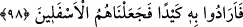
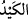

98. Böylece ona bir tuzak kurmayı istediler. Fakat biz onları alçaklardan kıldık.
“Böylece ona bir tuzak kurmayı” şer ve kötülük dokundurarak onu ateşte yakmayı
“istediler.” Zira İbrahim (a.s.) huccet ve delil ile onlara galebe çalıp onları susturunca,
onların putlarına tuzak kurarak onları kırıp parçaladığı gibi onlar da halk nezdinde
itibarlarını korumak, İbrahim (a.s.)’ı öldürmek için tuzak kurup hile yaptılar. el-
Müfredat’ta der ki: “
” bir çeşit tuzak ve hiledir.
“Fakat biz” onların hilelerini boşa çıkarıp ateşi İbrahim’e serinlik ve esenlik yaparak
bu durumu onun şânının yüceliğine açık bir delil gösterdik ve “onları alçaklardan
kıldık.” Kıssanın tafsili el-Enbiya 21/51-73’de anlatılmaktadır.
Şayet “Allah Teâlâ İbrahim (a.s.)’ı neden canıyla imtihan etti? denirse, buna şu
şekilde cevap veririz: Çünkü her insan Allah Teâlâ’nın kahır sıfatının tecelli etmesinden
korkar ve endişelenir. Nitekim Mûsâ (a.s.)’a şöyle buyrulmuştur: “Şu sağ elindeki
nedir, ey Mûsâ? O, benim asamdır, dedi, ona dayanırım, onunla davarlarıma
yaprak silkelerim; benim ona başkaca ihtiyaçlarım da vardır. Allah: Yere at onu, ey
Mûsâ! dedi. Onu hemen yere attı. Bir de ne görsün, hızla sürünen bir yılan değil
mi! Allah buyurdu: Al onu! Korkma! Biz onu şimdi ilk haline sokacağız.” (Taha
20/17-21). Allah Teâlâ İbrahim (a.s.)’a kahır sıfatı ile tecelli etse bile Allah’ın izni
olmadan ateşin hiçbir zarar vermeyeceğini bu şekilde göstermiş oldu. Yine aynı şekilde
Allah Teâlâ ateşi İbrahim (a.s.)’a serinlik ve esenlik yaparak iki zıddı bir araya
topladığını da ortaya koydu.
Burada düşmanları kahreden büyük bir mucize vardır. Çünkü onlar ateşe, güneşe,
yıldızlara tapıyorlar ve onların “rab” olduğuna inanıyorlardı. Allah Teâlâ onlara
bunların Allah’ın izni olmadan hiç kimseye hiçbir zarar veremeyeceğini gösterdi.
Haberde şöyle gelmiştir. Nemrud, ateşin İbrahim (a.s.)’a serinlik ve esenlik olduğunu
görünce ona “Elbette senin rabbin pek yücedir. Kurbanlar keserek ona yakınlık
sağlayalım” dedi. Fakat sapık inancı, bozuk ameli ve kötü halinde ısrarcı olduğu için
bunlar ona fayda vermedi.
Molla Câmî der ki:
Ansızın o felsefeci yol buldu/vardı,
Evliyâullahtan bir topluluğun önüne/meclisine.
Kış mevsimi idi ve orada bir mangal ateş vardı
Onların ortasında güzelce alevlenmişti
Felsefeci ateş ve mangala yaklaştı
Noksandan ve eksiklikten beri olan Halil İbrâhim (a.s.)’dan
O eski kıssayı tamamıyla zikir ve beyan etti
Ki ona ateş serin ve selâmet olmuştu
O felsefeci bilgisizliğinden ve kibrinden